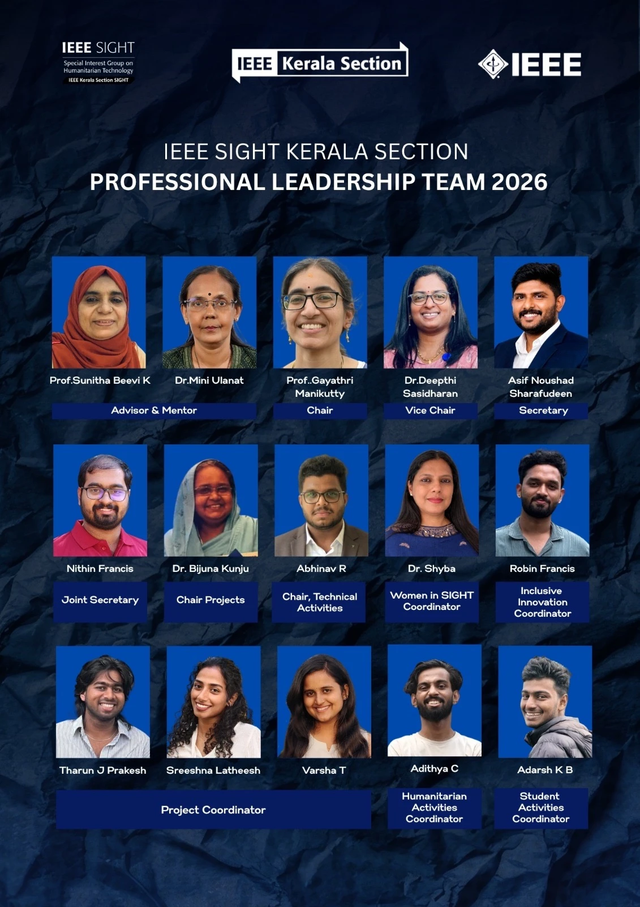
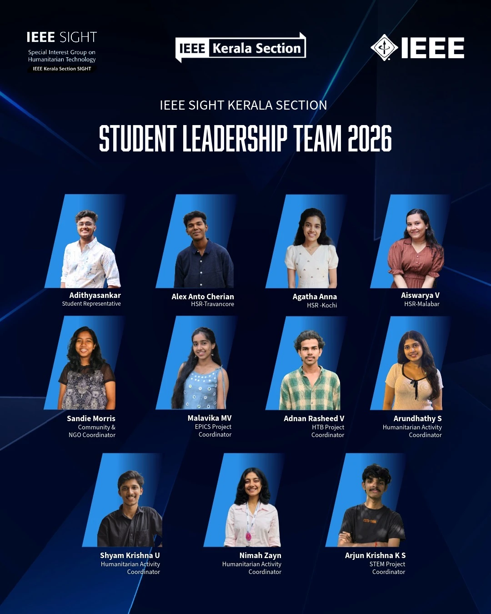
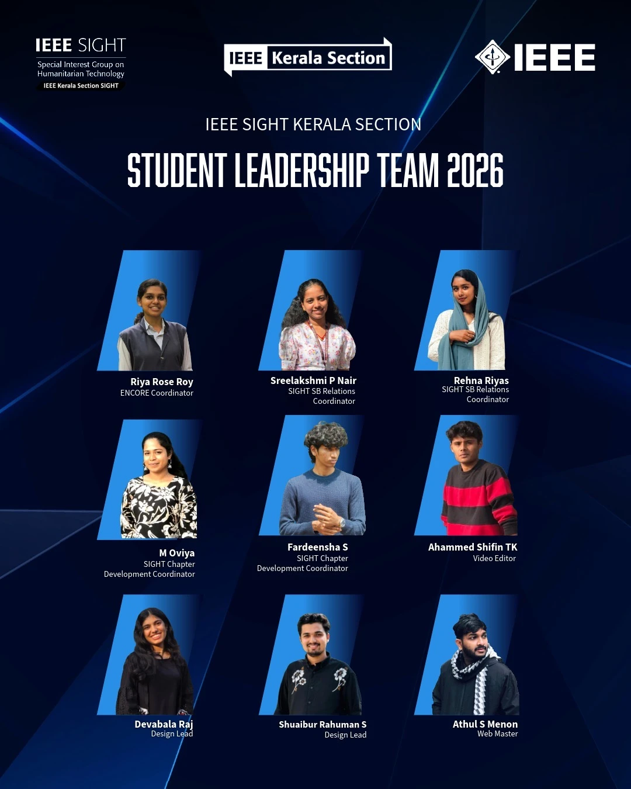

Prof. Sunitha Beevi K
Advisor & Mentor
OUR PEOPLE / 2026
The professional and student volunteers leading IEEE Kerala Section SIGHT in 2026.
2026

Advisor & Mentor
Advisor & Mentor
Chair
Vice Chair
Secretary
Joint Secretary
Chair Projects
Chair, Technical Activities
Women in SIGHT Coordinator
Inclusive Innovation Coordinator
Project Coordinator
Project Coordinator
Project Coordinator
Humanitarian Activities Coordinator
Student Activities Coordinator
2026

Student Representative
HSR–Travancore
HSR–Kochi
HSR–Malabar
Community & NGO Coordinator
EPICS Project Coordinator
HTB Project Coordinator
Humanitarian Activity Coordinator
Humanitarian Activity Coordinator
Humanitarian Activity Coordinator
STEM Project Coordinator

ENCORE Coordinator
SIGHT SB Relations Coordinator
SIGHT SB Relations Coordinator
SIGHT Chapter Development Coordinator
SIGHT Chapter Development Coordinator
Video Editor
Design Lead
Design Lead
Web Master
Names, roles and portraits are taken from the supplied 2026 leadership announcements.
Professional announcement ↗Student announcement 1 ↗Student announcement 2 ↗